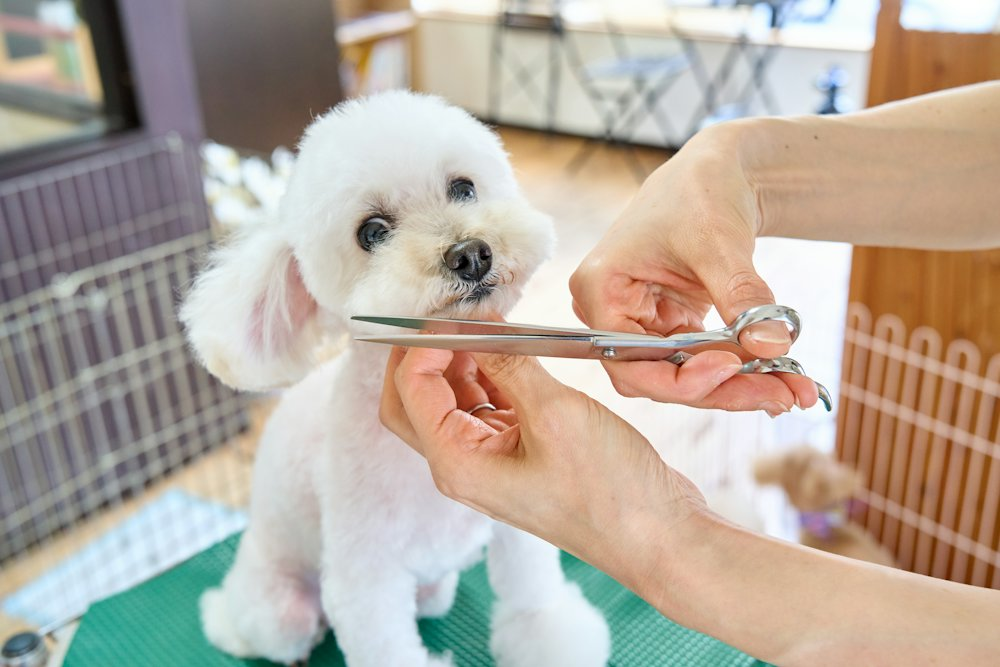

Klinik & vaksinasi
Pemeriksaan umum, konsultasi, vaksinasi, serta obat cacing dan kutu untuk kucing dan anjing.
Selengkapnya: Klinik & vaksinasiKlinik hewan & pet shop di Surabaya
Periksa, vaksin, grooming, titip, sampai belanja kebutuhan harian kucing dan anjingmu, semua di Lingkar Satwa.

Layanan
Pemeriksaan umum, konsultasi, vaksinasi, serta obat cacing dan kutu untuk kucing dan anjing.
Selengkapnya: Klinik & vaksinasi
Mandi, potong kuku, bersihkan telinga, rapikan bulu, dan pet hotel saat kamu bepergian.
Selengkapnya: Grooming & penitipan
Dokter datang ke rumah untuk hewan yang mudah stres atau sulit dibawa keluar.
Selengkapnya: Home visit
Hewanmu sesak, kejang, keracunan, atau kecelakaan? Hubungi nomor darurat sekarang.
Lihat tanda bahaya: Layanan daruratToko
Pilih produk, pesan lewat WhatsApp, admin bantu cek stok dan pengiriman.

Kenapa Lingkar Satwa
Kami ingin setiap kunjungan terasa tenang, untuk hewanmu dan untukmu.
Periksa, grooming, dan belanja kebutuhan harian tanpa pindah-pindah.
Dokter menjelaskan kondisi dan perawatan dengan bahasa yang mudah dipahami.
Booking dulu lewat WhatsApp, datang sesuai jadwal yang dikonfirmasi.
Sapa siap menjawab pertanyaan umum soal layanan, produk, dan jam buka.
Cara booking
Pilih layanan, jenis hewan, dan tanggal yang kamu inginkan.
Pesan booking tersusun otomatis. Tinggal tekan kirim.
Admin mengonfirmasi jadwalmu. Sampai jumpa di klinik!

Sapa bantu jawab soal layanan, produk, jam buka, dan cara booking. Untuk keluhan kesehatan, Sapa akan mengarahkanmu ke dokter.
FAQ
Sebaiknya ya, supaya kamu tidak menunggu lama. Isi formulir booking lalu kirim pesannya lewat WhatsApp. Admin akan mengonfirmasi jadwalnya. Untuk kondisi darurat, langsung telepon nomor darurat.
Kami melayani kucing dan anjing. Untuk hewan lain seperti kelinci atau hamster, tanyakan dulu ke admin agar kami bisa memastikan layanan yang tersedia.
Biaya tergantung jenis hewan, ukuran, dan kebutuhannya. Tanyakan ke admin lewat WhatsApp untuk informasi harga terbaru.
Bisa. Pilih produk di halaman Toko, tekan Pesan via WhatsApp, lalu admin akan mengonfirmasi harga, stok, dan pengiriman.
Sapa adalah asisten chat otomatis untuk informasi umum. Sapa tidak mendiagnosis dan tidak memberi dosis obat. Untuk keluhan kesehatan, booking pemeriksaan atau hubungi dokter.
Surabaya, Jawa Timur
| Senin–Jumat | 08.00–20.00 |
| Sabtu | 08.00–17.00 |
| Minggu | 09.00–14.00 |